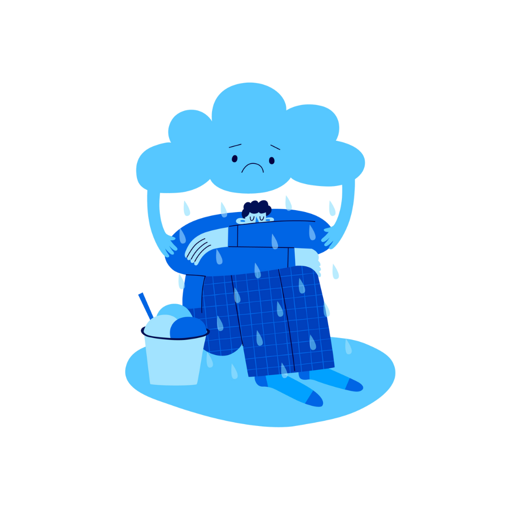

Merasa khawatir atau takut berlebihan?
Bedakan kekhawatiran biasa dengan gangguan kecemasan. Gangguan ini lebih mudah diatasi jika ditemukan sejak dini.
- ✅ Tes singkat dan valid secara ilmiah
- ✅ Skor kamu bersifat rahasia
Skrining GAD-7
Catatan: Ini adalah tes skrining, bukan diagnosis final.